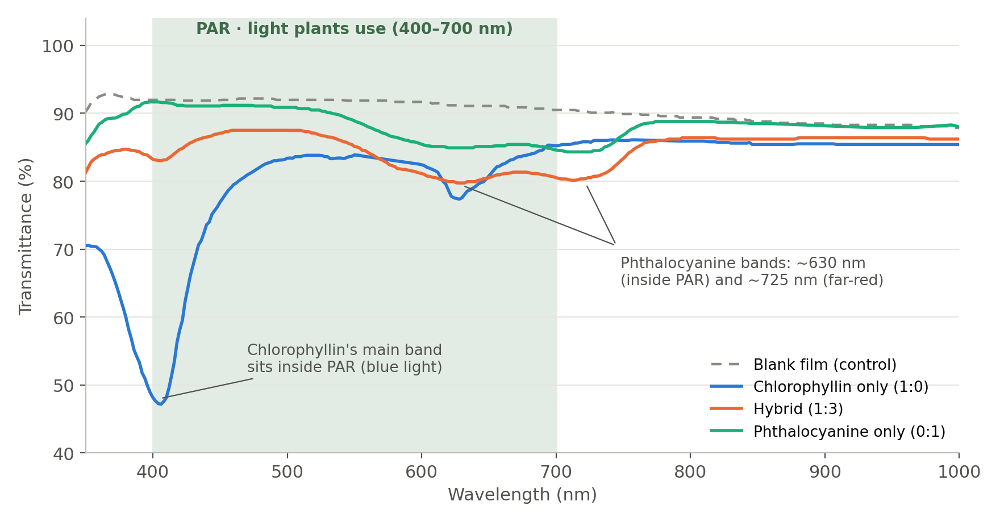

How much crop light does a light-harvesting film take?
Plants only use part of sunlight, mostly the wavelengths from 400 to 700 nanometers. That band is called PAR, short for photosynthetically active radiation. Donglu Shi's 2025 review describes transparent films that could let that light through to plants while absorbing other wavelengths to make energy, which is just what OSHN needs. One idea in it caught my attention: porphyrin-based materials, dye-like molecules in the same family as chlorophyll. It sounded promising, but I wanted to know what the existing ones really do to plant light, so I went back to the data underneath the review.
One thing makes this analysis necessary. The paper adjusted all of its films to the same 85% clarity to the human eye, which it calls average visible transmittance. To us the films look equally clear, but plants don't see the way we do, and the dyes take different amounts of the light plants need.
The words you'll see
- Wavelength
- The color of light, measured in nanometers (nm). Blue is around 450 nm, green around 550 and red around 650. Below 400 is ultraviolet, and above 700 is far-red, which we can barely see.
- PAR
- The light plants use, from 400 to 700 nm. That's roughly the rainbow we see, and it's where photosynthesis works best. Scientists call it photosynthetically active radiation.
- Photon
- A particle of light. Plants run on the number of photons they receive, and not on how bright the light looks to us, so I counted photons.
- Chlorophyllin and phthalocyanine
- Two dyes used in the films. Chlorophyllin is a green dye made from the pigment that makes leaves green. Phthalocyanine is a blue dye from the same family. A ratio like 1:3 is the mix, one part chlorophyllin to three parts phthalocyanine.
- Blank film
- The same plastic coating with no dye. Glass and plastic also stop a little light, so comparing each film to the blank one leaves only the dye's effect.
What I did
- I went back to the original study. The hybrid spectra in Shi's review come from Lin et al. (2022), so I read that paper's methods. Their samples were copper chlorophyllin and copper phthalocyanine, spin-coated into thin films. One thing I noticed along the way: in their Fig. 2, the panel letters appear swapped relative to the caption, so I used the panel whose spectra match the text.
- I pulled the values from the published figure. The raw spectral data weren't available, so I extracted the measured transmittance of each film from the plot itself. To check the extraction, I compared it to numbers the paper reports. My readings reproduce its visible transmittance (85% for the films, 90% for the blank film) within 2–3 points.
- I looked at the light from the plant's perspective. Sunlight isn't equally strong at every color, so I counted each color by how much sunlight actually has of it, using a standard reference spectrum (ASTM G173, AM1.5G). I split the light into what plants use for photosynthesis (PAR, 400–700 nm) and everything outside it (350–399 and 701–1000 nm). Then I compared each film to the blank film, so only the dye's effect counts.
How to read this graph
- Across the bottom is the color of the light, as a wavelength in nanometers. The shaded band, 400 to 700 nm, is the light plants use.
- Up the side is how much light passes through the film. 100% would be perfectly clear.
- The dashed gray line is the blank film with no dye. It's the baseline.
- Each colored line is a film with dye. Wherever it dips below the gray line, the dye is absorbing that color.
- What to look for: dips inside the shaded band take light plants need.

How to read this table
Each row is one film, compared against the blank film so only the dye's effect counts. The percentages count photons, the particles of light, because that's what plants use.
- Plant light blocked: of the sunlight in the 400 to 700 nm band, how much the film stops from reaching the plants. Lower is better for the plants.
- Other light captured: of the sunlight outside that band, how much the film absorbs. This is the light that could be harvested for energy at no cost to the plants. Higher is better for energy.
- Share of absorbed light that plants use: of everything the dye absorbs, the part that falls inside the plant band. A good film would have a low number here. These are about two-thirds, which is why these films don't solve the problem yet.
For example, the chlorophyllin-only film blocks 13% of plant light and captures 5% of the other light, and 71% of what it absorbs is light the plants would have used. For scale, that film blocks about three times as much plant light as the phthalocyanine-only film (13% vs 4%), so the dye mix matters a lot.
| Film (chlorophyllin : phthalocyanine) | Plant light blocked | Other light captured | Share of absorbed light that plants use |
|---|---|---|---|
| 1 : 0 (chlorophyllin only) | 13% | 5% | 71% |
| 1 : 0.5 | 11% | 6% | 65% |
| 1 : 1 | 9% | 4% | 68% |
| 1 : 2 | 8% | 4% | 67% |
| 1 : 3 | 9% | 5% | 66% |
| 0 : 1 (phthalocyanine only) | 4% | 2% | 71% |
Absorbing light is not the same as making electricity. These numbers say how much light a dye takes, not how much power a device could produce.
What I found. Depending on the film, the dye blocks 4% to 13% of the light plants use, and it captures only 2% to 6% of the light outside that band.
That's a lopsided trade. For every photon of other light a film catches, it takes about two photons of plant light. The reason is where the dyes absorb most: chlorophyllin's strongest absorption is in the blue, near 405 nm, and phthalocyanine has a strong band near 630 nm in the red. Both sit inside the plant band.
For OSHN, these particular films don't solve the problem yet. The material I'm looking for would need to absorb more below 400 nm or above 700 nm, so it takes less of the plant band and more of the rest.
A caveat: Lin et al. developed these films for transparent windows and heat generation, not for crops, and I'm working from their published measurements, not films I made or tested myself.
Limits
- Values were read from a published figure, not raw data (about ±0.5 percentage points of transmittance).
- Covers 350–1000 nm. Below 350 nm the glass itself absorbs.
- Absorbing light is not the same as producing electricity; nothing here estimates power output.
- I don't know how much light loss a crop can tolerate, so these numbers show how the films compare, not whether any of them would harm a crop.
- The films absorb only a little light overall, so reading errors matter most for the weakest absorber (0 : 1).
What's next
That result gave me my next question: can a hybrid's absorption be predicted from the absorption of its two ingredients? If it can, I can use that relationship to screen other porphyrins and phthalocyanines for combinations that absorb further into the far-red and near-infrared and leave more PAR for the plants. That's the next thing I'm testing.
Sources
- Shi, D. "Three-Dimensional Solar Harvesting with Transparent Spectral Selective Photovoltaics in Agrivoltaics." Energies 18, 1788 (2025). doi:10.3390/en18071788
- Lin, J.; Wang, Y.; Lyu, M.; Deng, Z.; Shi, D. "Transparent porphyrin-based hybrid films for spectral selective solar harvesting and energy generation." Sol. Energy Mater. Sol. Cells 243, 111788 (2022). doi:10.1016/j.solmat.2022.111788
- McCree, K. J. "The action spectrum, absorptance and quantum yield of photosynthesis in crop plants." Agricultural Meteorology 9, 191–216 (1972).
- ASTM G173-03 reference solar spectrum (AM1.5 global).
- Anthropic. Claude [AI assistant] (2026). claude.ai. Used to help extract values from the published figure, write the analysis code and the figure, and edit the wording on this page.